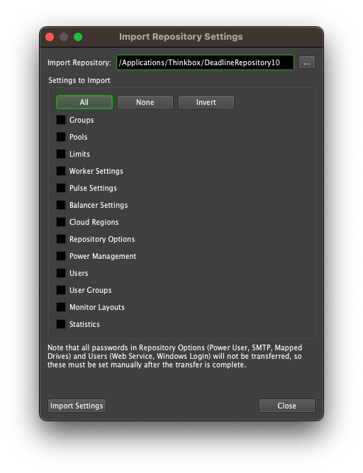

Importing Repository Settings¶
Note
The Repository installer now has an option to import Repository settings during installation via the Repository Settings Importer and Exporter. For more information, please see the Repository installation guides.
After installing a new Repository, you can import settings from a previous Repository into the new one. To do this, open the Monitor and ensure that you’re connected to the new Repository (the title bar for the Monitor window will show the Repository that you’re connected to). Then enter Power User Mode from the Tools menu, and select Tools -> Import Settings to bring up the Import Repository Settings window.
Specify the path to the old Repository that you want to import the settings from, and then choose which settings you want to import and press the Import Settings button. Note that all passwords in Repository Options (Power User, SMTP, Mapped Drives) and Users (Web Service, Windows Login) will not be transferred, so these must be set manually after the transfer is complete.
Also note that this feature only allows you to import settings from Deadline 6 or later. An un-supported Python script DeadlineV5Migration.py attempts to migrate Deadline v5.x customers over to Deadline v6.x. It can be found together with other useful example scripts on our GitHub site. Please note the disclaimer before executing this script in your Deadline farm.

{kind=link}